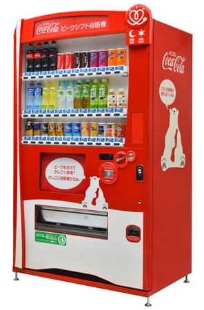
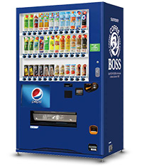
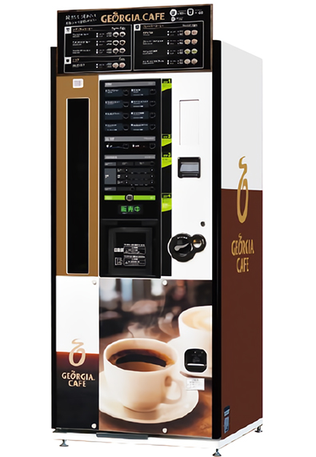
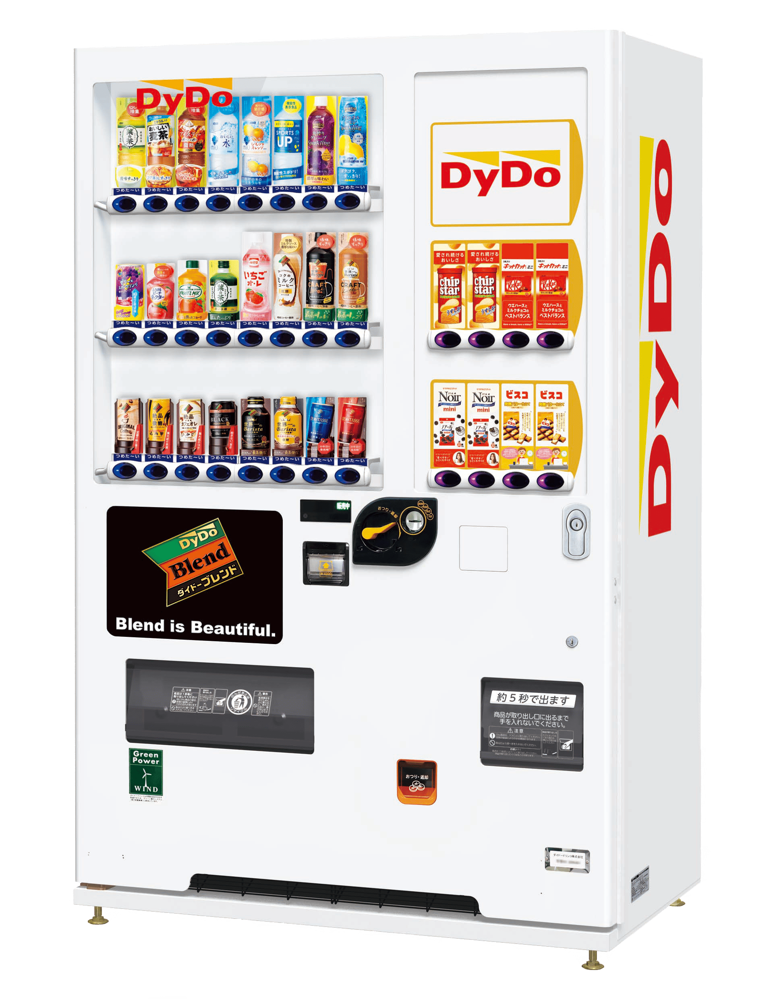
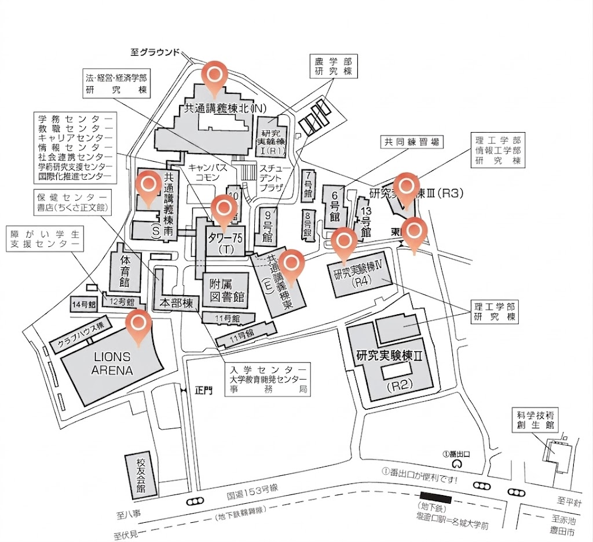

🚩 学内自販機ナビの使い方
-
色でメーカーを識別：
コカ・コーラは赤、 サントリーは緑、 ジョージアは紫、 Dydoはオレンジでフロアマップに表示 -
右上の「詳しく探す」ボタン：
クリックして、目的の建物名を選択すると、階数ごとのフロアマップが表示され、自動販売機の場所が具体的に分かる

コカ・コーラ

サントリー

ジョージア

ダイドー
■ 全体地図（天白キャンパス）
自動販売機の場所に印がついています．

📍 アクセス（名城大学 天白キャンパス）
住所：〒468-8502 愛知県名古屋市天白区塩釜口一丁目501番地